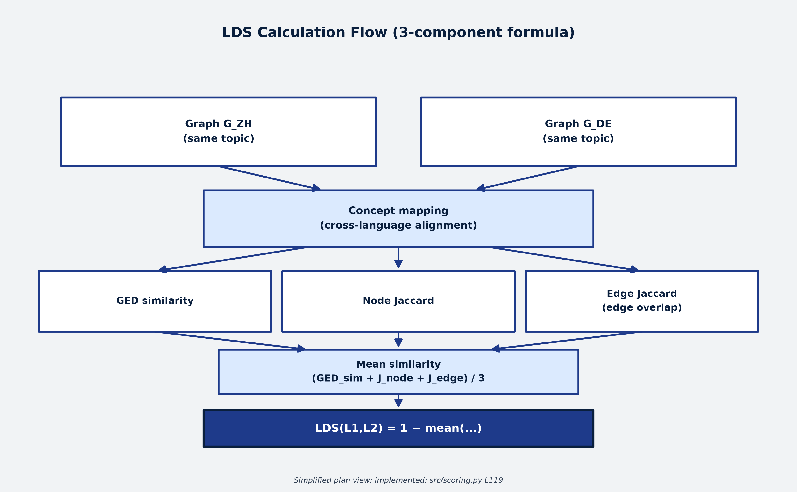
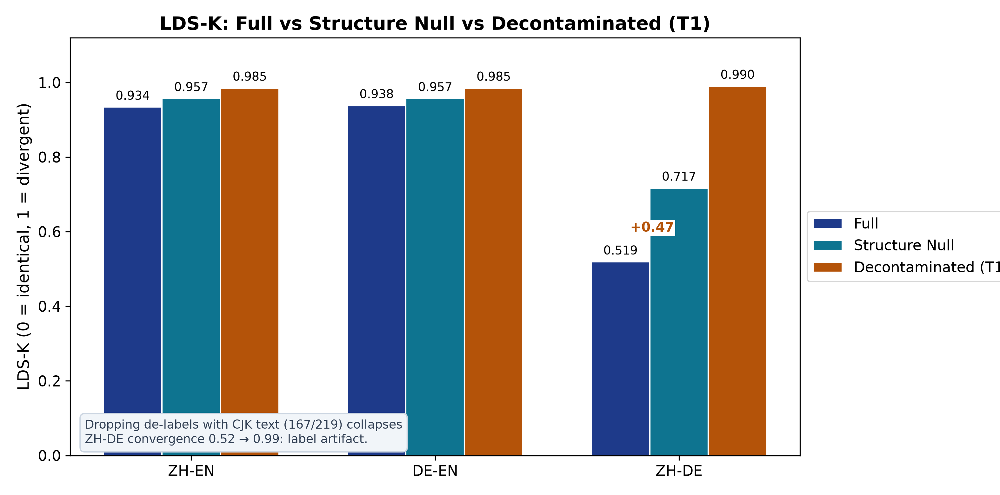
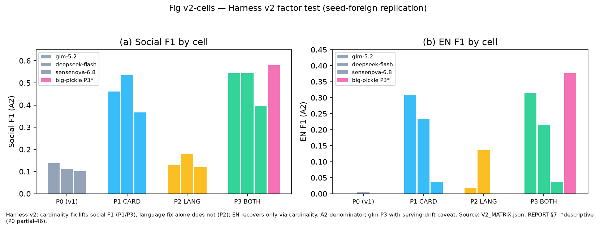

A cross-lingual analysis of mathematics, physics and chemistry textbook knowledge — across China, Germany, the United Kingdom and the United States — measured through structural graph metrics and curriculum alignment.
Same 204s cut — switching keeps your position.
Three complementary lenses on how the same knowledge is organized differently
How do different languages organize the same knowledge?
LDS-K nominal ZH-DE 0.519 (frozen v3) — T1 falsified it as a label artefact (0.52→0.99, Fig. 8); EN pairs ≈ noise floor. Core signal: ΔLDS (preliminary, level-separated). Terms LDS-K · ΔLDS · T1 are defined in Methodology and Finding C.
How do different STEM subjects organize knowledge?
All three disciplines follow an early-peak-later-decline pattern. Knowledge density peaks at middle or elementary school, then drops sharply. Maximum prerequisite depth is bounded at 8.
How do different curricula organize the same subject?
Coverage scores range from 12.7% (NRW) to 95.4% (China). Granularity (safest reading) and governance (hypothesis, paper §8.6) both fit these differences.
What this project delivers to the field
1,143 concepts and 1,118 aligned relations (517 math + 386 physics + 215 chemistry) across mathematics, physics and chemistry in Chinese, English and German — extracted from 204 textbook titles and checked against Preliminary gold (92: 20 hand C9a + 72 machine-seeded/human-accepted C9b Developing; DB-path social F1 0.939†; harness-v2 P3 social 0.40–0.58 (CARD-confirmed; LANG model-side failure); 5-agent panel screen MAINTAIN (11/72 unanimous rejects, human review open); weighted overall 0.881) — no validation claim.
CDS (concept density), HDS (hierarchy depth) and LDS (language drift) quantify how knowledge is connected, sequenced and structured across languages and disciplines.
The Coverage Score measures textbook–curriculum alignment across four education systems (Germany, UK, US, China), revealing how different educational philosophies produce systematically different alignment patterns.
12 findings spanning density patterns in the STEM sample (Preliminary, frozen graphs) (F1–F3, F6–F8), cross-language divergence (F4–F5), curriculum design philosophy (F9–F10), and human-validation revision (F11–F12) — all independently verifiable from the released data and pipeline.
From textbook text to structural insights in five steps

Provenance: production extraction model selected by 19-model benchmark (F1=0.666, qwen-plus); served-API revisions are provider-side; weight snapshot research/weight_snapshot_20260916.json, details paper App. W.
Every textbook cited by at least one graph concept. Node cards show the top-3 sources per concept; this is the full inventory (204 titles).
Local texts (2026-09-12): 89 open files + CN 11 books OCR done, fact-level (51 chapter txts). Text-grounded: physics ZH 66.5% / EN 62.1%, chemistry ZH 65.9% / EN 53.2% (semantic layer; substring 33.8/25.5) (college nodes out of high-school scope; DE link-only).
Scope note: 68 input corpora / 72 raw-library titles / 32 in-graph cited titles (Refs = citations across concepts). Corpus: 68 math textbooks (204 titles total, all subjects); full inventory below: 204 titles.
| Title | Lang | Refs |
|---|---|---|
| A First Course in Probability (Sheldon Ross) | en | 24 |
| AP Calculus AB/BC | en | 34 |
| Abitur Mathematik Leistungskurs (Baden-Württemberg) | de | 28 |
| Cambridge IGCSE Mathematics (0580) | en | 21 |
| Differential Equations and Linear Algebra (Edwards & Penney) | en | 14 |
| Erwin Fischer: Lineare Algebra | de | 10 |
| Gewöhnliche und partielle Differentialgleichungen | de | 14 |
| Gilbert Strang: Introduction to Linear Algebra (18.06) | en | 28 |
| IB Mathematics: Analysis and Approaches SL/HL | en | 18 |
| Khan Academy Mathematics 3-4 | en | 10 |
| Khan Academy Mathematics 3rd-5th Grade | en | 21 |
| Khan Academy Mathematics 5-6 | en | 15 |
| Khan Academy Mathematics 6th-8th Grade | en | 37 |
| Khan Academy Mathematics K-2 | en | 13 |
| Lambacher Schweizer 5-8 Klasse | de | 17 |
| Lambacher Schweizer Mathematik (erweitert) | de | 30 |
| Otto Forster: Analysis 1 | de | 21 |
| Otto Forster: Analysis 2 | de | 7 |
| Stewart Calculus (8th ed.) | en | 31 |
| Wahrscheinlichkeitsrechnung und Statistik | de | 24 |
| Westermann Mathematik Klasse 9-10 | de | 26 |
| 人教版《偏微分方程基础》 | zh | 8 |
| 人教版初中数学七年级 | zh | 15 |
| 人教版初中数学九年级 | zh | 18 |
| 人教版初中数学八年级 | zh | 17 |
| 人教版小学数学一年级上册 | zh | 10 |
| 人教版小学数学一年级下册 | zh | 11 |
| 人教版小学数学二年级上册 | zh | 9 |
| 人教版小学数学二年级下册 | zh | 9 |
| 人教版高中数学选修2-2 | zh | 85 |
| 同济大学《线性代数》 | zh | 64 |
| 浙江大学《概率论与数理统计》 | zh | 64 |
| Title | Lang | Refs |
|---|---|---|
| A-Level Physics (AQA) | en | 136 |
| A-Level Physics (OCR) | en | 136 |
| AP Physics 1 | en | 136 |
| AP Physics 2 | en | 136 |
| AP Physics C: E&M | en | 136 |
| AP Physics C: Mechanics | en | 136 |
| Arfken: Mathematical Methods | de | 127 |
| Auer: Physik | de | 93 |
| BBC Bitesize: KS3 Physics | en | 93 |
| Cambridge IGCSE Physics | en | 136 |
| CK-12: Elementary Physical Science | en | 10 |
| CK-12: Middle School Physics | en | 93 |
| Cornelsen: Physik aktiv | de | 93 |
| Cornelsen: Physik entdecken | de | 10 |
| Cornelsen: Physik Oberstufe | de | 136 |
| Demtröder: Experimentalphysik | de | 381 |
| Dorn-Bader: Physik | de | 136 |
| DUDEN: Physik Abitur | de | 136 |
| Duden: Physik Kompakt | de | 103 |
| Feynman Lectures on Physics | en | 254 |
| GCSE AQA Physics | en | 136 |
| GCSE Edexcel Physics | en | 136 |
| Glencoe: Physics: Principles and Problems | en | 93 |
| Greiner: Klassische Mechanik | de | 127 |
| Greiner: Quantenmechanik | de | 127 |
| Greiner: Thermodynamik und Statistische Mechanik | de | 127 |
| Griffiths: Introduction to Electrodynamics | en | 127 |
| Halliday Resnick Walker: Fundamentals of Physics | en | 254 |
| Holt: Middle School Science | en | 93 |
| IB Physics SL/HL | en | 136 |
| IGCSE Physics (0625) | en | 136 |
| Jackson: Klassische Elektrodynamik | de | 127 |
| Kern: Physik | de | 136 |
| Khan Academy Physics | en | 93 |
| Khan Academy: Elementary Science | en | 20 |
| Kittel: Introduction to Solid State Physics | en | 127 |
| Kleintolkroemer: Classical Electrodynamics | en | 127 |
| Klett: Physik | de | 93 |
| Lambacher Schwere: Physik | de | 186 |
| Landau Lifshitz: Mechanics | en | 127 |
| LEIFIphysik Induktion | de | 1 |
| National Geographic: Force, Motion, and Simple Machines | en | 10 |
| NPTEL Sensor Technologies | en | 1 |
| Pearson: Prentice Hall Science Explorer | en | 93 |
| Schiff: Quantenmechanik | de | 127 |
| Schrödinger: Quantum Mechanics | en | 127 |
| Serway Jewett: Physics for Scientists and Engineers | en | 254 |
| Thieme: Physik | de | 136 |
| Tipler: Physik | de | 254 |
| Westermann: Physik | de | 103 |
| Westermann: Physik Oberstufe | de | 136 |
| Young Freedman: University Physics | en | 254 |
| 人教版初中物理九年级全一册 | zh | 93 |
| 人教版初中物理八年级上 | zh | 93 |
| 人教版初中物理八年级下 | zh | 93 |
| 人教版小学科学三年级上 | zh | 10 |
| 人教版小学科学五年级上 | zh | 10 |
| 人教版小学科学四年级上 | zh | 10 |
| 人教版高中物理必修第一册 | zh | 136 |
| 人教版高中物理必修第三册 | zh | 136 |
| 人教版高中物理必修第二册 | zh | 136 |
| 人教版高中物理选择性必修第一册 | zh | 136 |
| 人教版高中物理选择性必修第三册 | zh | 136 |
| 人教版高中物理选择性必修第二册 | zh | 136 |
| 光学（赵凯华） | zh | 127 |
| 力学（漆安慎） | zh | 127 |
| 北师大版初中物理八年级 | zh | 93 |
| 北师大版小学科学四年级 | zh | 10 |
| 原子物理学（杨福家） | zh | 127 |
| 大学物理（马文蔚） | zh | 254 |
| 普通物理学（程守洙） | zh | 254 |
| 沪教版小学科学三年级 | zh | 10 |
| 沪科版初中物理八年级 | zh | 93 |
| 沪科版高中物理 | zh | 136 |
| 热学（汪志诚） | zh | 127 |
| 理论力学（梁昆淼） | zh | 127 |
| 电动力学（郭硕鸿） | zh | 127 |
| 电磁学（赵凯华） | zh | 127 |
| 粤教版初中物理八年级 | zh | 93 |
| 粤教版高中物理 | zh | 136 |
| 苏科版初中物理八年级 | zh | 93 |
| 量子力学（曾谨言） | zh | 127 |
| 鲁科版高中物理 | zh | 136 |
| Title | Lang | Refs |
|---|---|---|
| A-Level Chemistry (AQA) | en | 51 |
| A-Level Chemistry (OCR) | en | 51 |
| AP Chemistry | en | 51 |
| Atkins: Physical Chemistry | en | 123 |
| Atkins: Physikalische Chemie | de | 123 |
| Auer Chemie | de | 46 |
| BBC Bitesize KS3 Chemistry | en | 46 |
| Brown: Chemistry | en | 123 |
| Bruice: Organic Chemistry | en | 123 |
| Bruice: Organische Chemie | de | 123 |
| Cambridge IGCSE Chemistry | en | 51 |
| Chang: Chemistry | en | 123 |
| CK-12 Chemistry | en | 46 |
| Clayden: Organic Chemistry | en | 123 |
| Clayden: Organische Chemie | de | 123 |
| Cornelsen Chemie entdecken | de | 46 |
| Cornelsen Chemie Oberstufe | de | 51 |
| Dorn-Bader Chemie | de | 46 |
| Dorn-Bader Chemie Abitur | de | 51 |
| DUDEN Chemie Abitur | de | 51 |
| Duden Chemie Kompakt | de | 46 |
| Edexcel GCSE Chemistry | en | 51 |
| Engel: Physical Chemistry | en | 123 |
| Engel: Physikalische Chemie | de | 123 |
| GCSE AQA Chemistry | en | 51 |
| GCSE AQA Combined Science | en | 51 |
| GCSE Edexcel Chemistry | en | 51 |
| Glencoe Chemistry | en | 46 |
| Harris: Quantitative Chemical Analysis | en | 123 |
| Harris: Quantitative Chemische Analyse | de | 123 |
| Holt Chemistry | en | 46 |
| Housecroft: Anorganische Chemie | de | 123 |
| Housecroft: Inorganic Chemistry | en | 123 |
| IB Chemistry SL/HL | en | 51 |
| IGCSE Chemistry (0620) | en | 51 |
| Kern Chemie Abitur LK | de | 51 |
| Khan Academy Chemistry | en | 46 |
| Klett Chemie | de | 46 |
| Laidler: Physikalische Chemie | de | 123 |
| Levine: Physical Chemistry | en | 123 |
| Levine: Physikalische Chemie | de | 123 |
| Mortimer: Physikalische Chemie | de | 123 |
| Pearson: Prentice Hall Chemistry | en | 46 |
| Petrucci: General Chemistry | en | 123 |
| Shriver & Atkins: Anorganische Chemie | de | 123 |
| Shriver & Atkins: Inorganic Chemistry | en | 123 |
| Silberberg: Chemie | de | 123 |
| Silberberg: Chemistry | en | 123 |
| Skoog: Analytical Chemistry | en | 123 |
| Skoog: Analytische Chemie | de | 123 |
| Solomons: Organic Chemistry | en | 123 |
| Thieme Chemie | de | 51 |
| Wade: Organic Chemistry | en | 123 |
| Westermann Chemie | de | 46 |
| Westermann Chemie Oberstufe | de | 51 |
| Zumdahl: Chemistry | en | 123 |
| 人教版初中化学九年级上 | zh | 46 |
| 人教版初中化学九年级下 | zh | 46 |
| 人教版高中化学必修第一册 | zh | 51 |
| 人教版高中化学必修第二册 | zh | 51 |
| 人教版高中化学选择性必修第一册（化学反应原理） | zh | 51 |
| 人教版高中化学选择性必修第三册（有机化学基础） | zh | 51 |
| 人教版高中化学选择性必修第二册（物质结构与性质） | zh | 51 |
| 分析化学（华东理工） | zh | 123 |
| 分析化学（武汉大学） | zh | 123 |
| 化工原理（柴诚敬） | zh | 123 |
| 北师大版初中化学 | zh | 46 |
| 无机化学（大连理工） | zh | 123 |
| 无机化学（武汉大学） | zh | 123 |
| 有机化学（汪小兰） | zh | 123 |
| 有机化学（邢其毅） | zh | 123 |
| 材料化学（曾兆华） | zh | 123 |
| 沪教版初中化学 | zh | 46 |
| 沪科版高中化学 | zh | 51 |
| 湘教版初中化学 | zh | 46 |
| 湘教版高中化学 | zh | 51 |
| 物理化学（傅献彩） | zh | 123 |
| 物理化学（南京大学） | zh | 123 |
| 环境化学（戴树桂） | zh | 123 |
| 生物化学（王镜岩） | zh | 123 |
| 科粤版初中化学 | zh | 46 |
| 粤教版初中化学 | zh | 46 |
| 粤教版高中化学 | zh | 51 |
| 结构化学（周公度） | zh | 123 |
| 苏教版初中化学 | zh | 46 |
| 苏教版高中化学 | zh | 51 |
| 高分子化学（潘祖仁） | zh | 123 |
| 鲁教版初中化学 | zh | 46 |
| 鲁科版高中化学 | zh | 51 |
Refs = citations across concepts. New textbooks are appended here on ingestion (see docs/physics_sourcing.md for the gap list). Raw excerpts live in data/textbook/.
Five finding sections covering twelve numbered results (F1–F12): how knowledge is organized across disciplines, languages, education systems, and individuals
Mathematics peaks at middle school (CDS = 0.271). Physics peaks at elementary school (CDS = 0.222). Chemistry shares the same middle school peak (CDS = 0.042). After the peak, density drops sharply — a 3.7× decline from middle to high school in mathematics. Values frozen from the June 2026 dense graph; not recomputable from the current archive — see Fig 3 forensic note.
This contradicts the natural assumption that "more advanced knowledge is more densely connected." Instead, curricula are designed to maximize connection density during foundational stages (early integration) before branching into specialization (later differentiation).


Source. CDS per level from the math graph (Fig 3) and the three-discipline matrix (outputs/physics_comparison.json + chemistry_comparison.json, Fig 7) — the same numbers formerly shown in the retired CDS Terrain view (archived 2026-09-16).
Method. CDS = 2|E|/(|V|·(|V|−1)) per level cell; the math graph renders 233 of 517 relations. Nothing is rescaled.
Reading. Height = density; an early peak then decline in all three subjects (math middle 0.271, physics elementary 0.222, chemistry middle 0.042).
Maximum prerequisite chain depth is HDS ≤ 8 for mathematics and HDS ≤ 6 for physics. Mean depth is even lower: 0.40 for math, 0.85 for physics. Over 83% of math concepts have no prerequisite chains at all (root concepts).
Physics has 2.1× more sequential depth than mathematics (60% roots in physics vs 83% in math), reflecting its more cumulative knowledge structure. But both disciplines respect the same shallow upper bound — suggesting a pedagogical or cognitive constraint on how knowledge can be sequenced.

Textbook structures look more convergent than random expectation — but decontamination falsifies this reading. ZH-DE (LDS-K = 0.519) collapses to 0.990 once de-labels containing Chinese text (167/219) are removed: the apparent convergence is a label artifact, not content convergence. ZH-EN (0.933) and DE-EN (0.938) sit near the within-language noise floor (0.97, textbook line) either way.
The pattern is also topic-dependent: within each language pair, LDS varies by up to 0.2 across the 5 social topics analyzed, suggesting that some knowledge domains are more culturally inflected than others.
Source: data/math_extractions/merged/aligned_data.json (219 groups, also present in merged_concepts.json, 557 rows vs 556 graph nodes — Δ1 open, not a headline number). Frozen: ZH-DE 0.519 · ZH-EN 0.933 · DE-EN 0.938; T1 decontamination ZH-DE J_node 0.556 → 0.020. Honest label: math-only calculus spot check, 8 of 219 groups — no cross-domain claim.
Math-only note: all 8 are calculus concepts; high name similarity is expected in mathematics and does not generalize beyond this spot check — frozen LDS-K 0.519 / 0.933 / 0.938 and T1 0.556 → 0.020 are unchanged.


Honesty note (T1 decontamination, 2026-09): ZH-DE J_node 0.556 → 0.020 after removing CJK-contaminated de-labels; size-matched bootstrap reverses the wiki comparison at every k. Verdict: label artifact (paper §3.8, Fig 8).
| Dimension | Tier-1 Textbook explicit graph (main evidence) | Tier-2 Latent vectors (control baseline, this batch) |
|---|---|---|
| Source | Textbook concept/relation tables (68 files, 741 concepts / 665 relations, human + multi-model audit) | Open-weight embeddings of the same concept names (nomic-embed-text-v1.5, 768 dims, 934 entries, 434 primary pairs) |
| What is measured | Curriculum structure: GED similarity + node/edge Jaccard synthesis ("what is taught, how it connects") | Distributional paraphrase proximity: cosine distance of synonymous cross-lingual names ("how similar it sounds in pretraining") |
| Topology | Structured, high variance: spread 0.419; zh-de 0.519 far below EN-involved ≈0.93 (0.933 / 0.938) | Uniform, low variance: spread 0.0445; overall 0.5029±0.1058; zh-de 0.4804 (n=65) / zh-en 0.5249 (n=184) / de-en 0.4888 (n=185) |
| Interpretability | High: traceable to concepts / edges / dangling refs (51 global unresolved, see blue-team defense) | Low: a single value is not traceable to a curriculum fact; distribution-level statements only |
| Role | Main evidence: carries the macro language-separability signal (LDS-C, p<0.004) | Control baseline (falsification probe): if an effect exists at graph level but vanishes at vector level, it is curriculum structure, not generic semantics. Never a standalone conclusion, never interchangeable. |
Key sentence: open-weight vector space compresses the three synonymous-pair distances into the 0.48–0.52 narrow band (spread 0.0445) and does not reproduce the structured split of textbook LDS-K (spread 0.419, zh-de 0.519 ≪ EN-involved ≈0.93) — the graph is the main evidence for curriculum structure, vectors are the control baseline for distributional proximity; complementary, not interchangeable.
Scale warning: cosine distance and 1 − mean(GED_sim, node/edge Jaccard) are different quantities — compare rank order only, never raw values. The zh-de closeness (−0.04) is a coincidence of scales; do not report "vectors confirm the zh-de LDS-K value". Reproduce: python scripts/tools/openweight_embed_audit.py --batch 32 (LM Studio online).
Coverage scores range from 12.7% (NRW) to 95.4% (China). China shows near-perfect alignment under a centralized national curriculum. The UK (37.3%) shows moderate alignment through its national curriculum. The US (17.2%) and NRW (12.7%) reflect broad or detailed standards that afford local adaptation. These differences are consistent with educational governance (hypothesis, paper §8.6) — but granularity (A) remains the safest interpretation; the data fit all three explanations below.
Fig 8 — Overall Coverage Score (paper §8.5: NRW 12.7% · UK 37.3% · US 17.2% · China 95.4%)
Source. Overall column of config/expert_graphs/coverage_all_curricula.json (paper §8.5) — the same table behind the coverage cards above.
Method. Keyword bridge + 2-overlap threshold; overall = matched/total across all stages per system.
Reading. Bar = system overall; the gap runs China 95.4% down to NRW 12.7%.
F9 Coverage scores vary dramatically across education systems (12.7%–95.4%). Granularity (safest reading) and governance (hypothesis, paper §8.6) both fit these differences.
F10 China's near-perfect alignment (95.4%) versus NRW's low alignment (12.7%) reflects the spectrum from centralized curriculum to local adaptation.
Extended study (6 DE · 6 ZH · 3 EN): concept-level LDS-C (human) is 0.93–0.96 — indistinguishable from the within-language split-half floor (0.92–0.96) and label permutation (0.94). Concept-level ΔLDS ≈ 0 (−0.05…+0.05); relation-level Δ is not comparable across sparsity regimes. Pilot N=8 values (0.70–0.75) were not replicated and are reported for transparency only. The earlier human-vs-simulation comparison (p=0.05) is withdrawn (measurement-scale drift).
| Level | DE–ZH | DE–EN | ZH–EN | Rank Order |
|---|---|---|---|---|
| Human N=15 (Between) | 0.93–0.96 | 0.93–0.96 | 0.93–0.96 | ≈ floor |
| LLM Within-Subject | ≫ floor (+0.08–0.09) | ≫ floor | ≫ floor | signal |
| Textbook LDS-K | 0.519 | 0.938 | 0.933 | ✓ |
| Simulation Baseline | 0.646 | 0.655 | 0.640 | withdrawn* |
F11 N=15 falsifies ΔLDS > 0 between-subject: human LDS-C ≈ split-half floor — between-subject designs cannot separate language from participant variance.
F12 Concept-level ΔLDS ≈ 0; LLM within-subject margin (+0.08–0.09) shows the signal exists — earlier simulation comparison withdrawn.
F12 note: the Two-Tier vector baseline uses nomic embeddings only and is unaffected by the design-vs-execution judge swap (design phi-4-mini-instruct vs execution muse-spark-1.3-contributor); see paper §2.12 and App. W.
Pass: math-domain LDS splits significantly while the humanities subset on the same pair does not (or flips sign) → supports "effect is math-curriculum-specific", against a generic-language-distance reading. Alarm: humanities subset reproduces the same split → math LDS significance stands (different test objects), but the "curriculum-specific" claim is downgraded to "shared cross-domain split" and the generic factor must be chased. Never: the humanities subset alone confirms the math conclusion (different domains, no transfer). Execute at N=30: full-set LDS-C first, then the humanities slice under the same pipeline and alpha with independent Bonferroni correction; report both tables side by side, never only the favorable half. Current state: pilot N=8 social-topic values (0.704/0.727/0.751) are implanted as the probe baseline placeholder — no pass/alarm call today.
| Reviewer question | Standard answer (read verbatim) |
|---|---|
| N=8 and you report human conclusions? | No. N=8 is a pipeline demo placeholder; the powered design is N=30 (86% power for ΔLDS>0). The human column registers shape only, no significance claim. |
| Vectors or graphs — which is right? | Not a right/wrong relation but two measurement layers: graphs measure curriculum structure (main evidence), vectors measure distributional proximity (control baseline). Vector uniformity is exactly what shows the graph's structure is not generic semantic noise. |
| zh-de 0.48 vs 0.52 — mutual confirmation? | No. Different scales (cosine distance vs GED+Jaccard synthesis); closeness is coincidence. Rank order only, never raw values. |
| What if the humanities probe alarms? | Downgrade "curriculum-specific" to "shared cross-domain", chase the generic factor; do not retract math LDS significance (different test objects, see blue-team D5 layering). |
| Is 500-perm p<0.004 fished? | It is the resolution limit at 500 permutations (minimum reportable p); 59/59 pass with margin floor 0.033 > 0; micro noise does not move the macro margin order (see blue_defense_20260914.md §D5). |
| temperature=0 reproducible? | Judge calls use temperature=0, max_tokens=5; embeddings have no sampling randomness (same word, same vector) — rerun the script for the same table; only an LM Studio model-version change forces re-registration. |
Explore the mathematics subgraph in an interactive 3D knowledge graph — 556 nodes · 233 rendered links (of 517 aligned relations) · 219 groups
Switch between zoom, rotate and fly modes. Explore the graph in three languages or switch discipline. Compare how different education systems structure the same mathematical knowledge.
Transparent assessment of methodological boundaries and potential biases
How four education systems align their curricula with textbook content
Coverage decreases toward upper-secondary specialization. Teachers exercise curricular freedom — they select from the curriculum rather than covering all of it. Reflects a specialization-driven philosophy.
The exam-driven system drives comprehensive textbook coverage — every curriculum point must be taught because it might be tested. Moderate overall alignment (37.3%, paper §8.5).
Low overall coverage with stable trajectory across stages. The US standards define broad learning goals rather than detailed syllabi, giving textbook authors interpretive freedom while maintaining curriculum alignment.
Near-perfect alignment with a centralized national curriculum. Chinese textbooks closely follow the national syllabus, resulting in the highest coverage across all four systems. The highly selective, curriculum-driven textbook market aligns textbooks tightly with government standards.
Source. Per-stage rows of config/expert_graphs/coverage_all_curricula.json — the same table behind the coverage cards above.
Method. Keyword bridge + 2-overlap threshold (≥2 shared keywords = covered); card headline = system overall.
Reading. Each card narrates one system; the numbers match the card headlines above.
Claims: Dense curricula produce higher coverage. Evidence: Counter-indicated — the US has the densest curriculum (2,124 concepts) but one of the lowest coverages (17.2%).
Coverage patterns reflect educational governance: CN centralized (95.4%), UK national curriculum (37.3%), US broad standards (17.2%), NRW per-track specifications (12.7%).
Some concepts may be taught in other subjects (e.g., physics in chemistry). Plausible but unverified — cross-subject concept mapping could reveal systematic transfers.
Gold standard annotations and model benchmarks
Mixed-provenance gold (20 hand C9a + 72 machine-seeded/human-accepted C9b, Developing; harness-v2 P3 0.40–0.58, panel MAINTAIN) checked against extraction (Preliminary) — no validation claim.
| Domain | ZH F1 | DE F1 | EN F1 | Overall | n |
|---|---|---|---|---|---|
| Social Concepts | 0.974† | 0.949† | 0.882† | 0.939† Developing (DB-path; harness-v2 P3 0.40–0.58; panel MAINTAIN) | 72 |
| Mathematics | 0.857 | 0.506 | 0.711 | 0.674 | 20 |
| All (weighted) | 0.951 | 0.842 | 0.844 | 0.881 | 92 |
Note: The low German math F1 (0.506) is a domain mismatch — the math gold labels use Chinese/English mathematical terminology not present in the German textbook corpus. Social concept extraction is uniformly strong across all three languages.

All free-quota Bailian API models tested on 92 gold labels. The production extraction model was selected by overall F1.
Design vs execution: the design judge is phi-4-mini-instruct (open weights, snapshot object); the executed merge used muse-spark-1.3-contributor (closed API, 10 parallel judges, 407 results) — not interchangeable. The Two-Tier vector finding uses nomic embeddings only and is unaffected by this swap (paper §2.12, App. W).
Source. 19 models scored on 92 gold labels (model-selection benchmark, Validation section).
Method. F1 on gold labels; the production extraction model was selected by overall F1. Range 0.55–0.67.
Reading. Bar = F1 per model. Used only for extractor selection — never for language claims (that is the 59-run replication below).
Fused view — all 59 full-run ZH-DE margins (LDS-C minus split-half floor) under one P1 protocol (ZH/DE/EN × 10); all 59 ZH-DE p<0.01; 9 EN n.s. among 177 (500 permutations). Western runs in red. The 26 collecting runs (incl. qwen-max n=26/30 (parked), 2 sparse small-model boundary runs and 1 format-quarantined run, per paper §8.15) withhold margins until n=30. Source: data/lds_c/llm_subject/multi_model_replication_20260913.json + paper §5.10.
Source. 59 full runs from data/lds_c/llm_subject/multi_model_replication_20260913.json — the same rows as the roster table below. 26 collecting runs (n<30, sparse-boundary or quarantined) withhold margins.
Method. Margin = LDS-C minus split-half floor, one P1 protocol for all runs; 500 permutations, all 59 ZH-DE p<0.01; 9 EN n.s. among 177. Sorted descending; nothing rescaled.
Reading. Bar = margin, all 59 positive. Red = western (scattered = no origin clustering). The roster table below lists every row.
| Model | Origin | ZH-DE margin | Signif. |
|---|---|---|---|
| command-a-03-2025 | West · Cohere · CA | +0.42 | p<0.01 |
| gpt-5.6-luna | West · origin undisclosed | +0.22 | p<0.01 |
| nemotron-3-super-120b-a12b | West · NVIDIA · US | +0.17 | p<0.01 |
| nemotron-3-ultra | West · NVIDIA · US | +0.16 | p<0.01 |
| gpt-oss-20b | West · OpenAI-weights · US | +0.13 | p<0.01 |
| laguna-s-2.1 · direct | West · Poolside · US | +0.10 | p<0.01 |
| laguna-s-2.1 · kilo | West · Poolside · US | +0.07 | p<0.01 |
| deepseek-v3.1 | CN | +0.29 | p<0.01 |
| qwen-turbo | CN | +0.25 | p<0.01 |
| qwen3-max | CN | +0.24 | p<0.01 |
| deepseek-v3 | CN | +0.24 | p<0.01 |
| qwen3.8-max | CN | +0.21 | p<0.01 |
| glm-5 | CN | +0.19 | p<0.01 |
| qwen3.5-397b-a17b | CN | +0.18 | p<0.01 |
| qwen3.7-max | CN | +0.18 | p<0.01 |
| glm-5.2-fast-preview | CN | +0.18 | p<0.01 |
| qwen3.5-plus | CN | +0.18 | p<0.01 |
| deepseek-v3.2 | CN | +0.17 | p<0.01 |
| deepseek-v4-flash · dashscope | CN | +0.16 | p<0.01 |
| MiniMax-M2.5 | CN | +0.16 | p<0.01 |
| qwen3.6-plus | CN | +0.16 | p<0.01 |
| glm-5.2 · direct | CN | +0.16 | p<0.01 |
| qwen3.7-plus | CN | +0.15 | p<0.01 |
| glm-4.6 | CN | +0.15 | p<0.01 |
| glm-5.1 | CN | +0.14 | p<0.01 |
| longcat-2.0 | CN | +0.14 | p<0.01 |
| kimi-k2.6 · direct | CN | +0.14 | p<0.01 |
| glm-4.7 | CN | +0.13 | p<0.01 |
| kimi-k2.6 · dashscope | CN | +0.13 | p<0.01 |
| MiniMax-M2.1 | CN | +0.13 | p<0.01 |
| muse-spark-1.3-contributor | West · origin disclosed | +0.12 | p<0.01 |
| llama-3.3-70b-instruct-fp8-fast | West · Meta-weights · US | +0.12 | p<0.01 |
| kimi-k2.5 | CN | +0.12 | p<0.01 |
| kimi-k2.7-code | CN | +0.12 | p<0.01 |
| qwen3.5-27b | CN | +0.12 | p<0.01 |
| glm-5.2 · dashscope | CN | +0.12 | p<0.01 |
| qwen3.6-27b | CN | +0.11 | p<0.01 |
| deepseek-v4-pro · dashscope | CN | +0.11 | p<0.01 |
| qwen-flash | CN | +0.11 | p<0.01 |
| Kimi-K2-Instruct | CN | +0.10 | p<0.01 |
| deepseek-r1-distill-qwen-14b | CN | +0.10 | p<0.01 |
| qwen-plus | CN | +0.10 | p<0.01 |
| qwen3.5-35b-a3b | CN | +0.10 | p<0.01 |
| qwen3.5-flash | CN | +0.09 | p<0.01 |
| qwen3.5-122b-a10b | CN | +0.09 | p<0.01 |
| kimi-k2-thinking | CN | +0.09 | p<0.01 |
| grok-4.6 | West · xAI · US | +0.09 | p<0.01 |
| phi-4-mini-instruct | West · Microsoft · US · local | +0.09 | p<0.01 |
| qwen3.6-35b-a3b | CN | +0.08 | p<0.01 |
| deepseek-v4-flash · direct | CN | +0.08 | p<0.01 |
| qwen3-235b-a22b | CN | +0.08 | p<0.01 |
| mimo-v2.5 | CN | +0.08 | p<0.01 |
| deepseek-v4-pro · direct | CN | +0.07 | p<0.01 |
| qwen3.7-flash | CN | +0.07 | p<0.01 |
| deepseek-r1-distill-qwen-32b | CN | +0.07 | p<0.01 |
| qwen3.6-flash | CN | +0.05 | p<0.01 |
| deepseek-r1 | CN | +0.05 | p<0.01 |
| deepseek-r1-distill-qwen-7b | CN | +0.04 | p<0.01 |
| deepseek-r1-0528 | CN | +0.03 | p<0.01 |
| Model | Origin | Progress | Status |
|---|---|---|---|
| Collecting — incomplete runs (n<30, margin withheld) + small-model boundary runs: | |||
| qwen-max | repo | n=26/30 | parked · quota |
| qwen2.5-0.5b-instruct | repo | n=30/30 | ZH-DE n.s. (p=0.168) · boundary, see small-model panel |
| hy-mt2-1.8b | repo | n=30/30 | floor NaN (sparse extraction) · boundary, see small-model panel |
| gemma-3-270m-it | repo | n=30/30 | format quarantine (no en-gloss) · re-run pending |
| gpt-oss-20b | repo | n=20/30 | collecting |
| nemotron-3-ultra-550b-a55b · openrouter | repo | n=19/30 | collecting |
| ling-3.0-tiny | repo | n=15/30 | collecting |
| nemotron-3-nano-30b-a3b | repo | n=6/30 | collecting |
| laguna-s-2.1 | repo | n=5/30 | collecting |
| north-mini-code | repo | n=3/30 | collecting |
| glm-4.5 | repo | n=3/30 | collecting |
| glm-4.5-air | repo | n=3/30 | collecting |
| qwen3-14b | repo | n=3/30 | collecting |
| qwen3-30b-a3b | repo | n=3/30 | collecting |
| qwen3-32b | repo | n=3/30 | collecting |
| qwen3-8b | repo | n=3/30 | collecting |
| qwq-plus | repo | n=3/30 | collecting |
| gemma-4-26b-a4b-it | repo | n=3/30 | collecting |
| gemma-4-31b-it | repo | n=3/30 | collecting |
| ling-3.0-tiny · inclusionai | repo | n=3/30 | collecting |
| nemotron-3-super-120b-a12b · nvidia | repo | n=3/30 | collecting |
| nemotron-3-ultra-550b-a55b · nvidia | repo | n=3/30 | collecting |
| laguna-xs-2.1 | repo | n=3/30 | collecting |
| gemini-3.8-flash | repo | n=2/30 | collecting |
| mistral-medium-latest | repo | n=2/30 | rate-limited · drip running |
| mistral-small-3.1-24b-instruct | repo | n=1/30 | collecting |
Scope note: F1-benchmark (19 models, gold-label model selection) ≠ replication (59 runs, language signal) ≠ collecting (26 rows: 23 incomplete incl. qwen-max n=26/30 (parked) + 2 sparse small-model boundary runs + 1 format-quarantined run, margin withheld). Families per paper §5.10: Qwen 19 · DeepSeek 12 (incl. 3 R1-Distill-Qwen) · GLM 7 · Kimi 6 · MiniMax 2 · mimo · laguna ×2 · longcat · nemotron ×2 · gpt-oss · command-a · luna · grok · llama · spark · phi. Boundary (not counted): qwen2.5-0.5b (ZH-DE n.s.), hy-mt2-1.8b (floor NaN), gemma-3-270m (quarantine).
The same P1 protocol was run on four local small models. Only one clears the formal bar — the other three show exactly where the measurement chain breaks: sparse extraction (empty topic sets → NaN floor), a null result, or a schema failure. They are reported here, not in the headline.
Promoted (row 59). ZH-DE margin +0.09, p<0.01; dense extraction (~140 concepts/language, vs ~295 baseline). The language signal survives at 3.8B local.
Boundary (not counted). ZH-DE n.s. (p=0.168), floor NaN on ZH-EN/ZH-DE — sparse extraction (zh 36 concepts total). Honest null: signal absent or below resolution at 0.5B.
Boundary (not counted). Translation-specialist model: whole topic sets empty (zh Freiheit/Heimat/Erfolg = 0 concepts) → floor NaN, margin undefined. Its ZH-EN LDS=1.0 is an empty-set artifact, not a finding.
Quarantined (not counted). 270M params could not follow the JSON extraction schema (string concepts, no en-gloss, 4/5 topics). Data kept, re-run with repaired collector pending.
Extraction density = extracted concepts per language (all 5 topics, k=10). Baseline deepseek-v4-flash ~295/language; phi-4-mini ~140; qwen2.5-0.5b zh 36; hy-mt2-1.8b zh 17. Below ~50 concepts/language the split-half floor collapses (NaN) and the margin becomes undefined — the chain breaks at extraction, not at answering.
ZH-DE outcome per small model vs the formal median (+0.12). phi-4-mini replicates (+0.09, p<0.01). qwen2.5-0.5b is null (p=0.168). hy-mt2-1.8b has no defined margin (NaN). gemma-3-270m has no analyzable extraction. Registered follow-up: a small-model extraction track (per-topic fallback prompts, independent cross-extraction).
Preprint manuscript available in the repository
LinguaGraph asks whether language shapes the structural organization of knowledge. Two pipelines — textbook graphs (556 concepts, 517 relations, 219 groups) and LLM-as-subject (59 runs, 54 models) — isolate the language signal ΔLDS: N=15 falsifies it between-subject; within-subject shows it clearly (paper §5).
Three Conclusions · Introduction · Related Work · Methodology · Results · Discussion · Conclusion · Physics Results · LPA Analysis
@misc{linguaGraph2026,
author = {Rong, Jiajun and Lan, Zhenxi},
title = {LinguaGraph: Cross-Lingual Knowledge Structure Analysis Framework},
year = {2026},
publisher = {GitHub},
journal = {BWKI 2026 — Bundeswettbewerb Künstliche Intelligenz},
url = {https://github.com/jjjjjjjjnnjnn/BWKI-2026-LinguaGraph}
}
All data, code and results are publicly available
Complete pipeline scripts, extraction code, benchmark runners and evaluation tools.
All knowledge graphs, curriculum alignments, gold annotations and benchmark results.
Full manuscript with 3 research questions, 4 metrics, 12 findings and error analysis.
18 figure bases: CDS, HDS, LDS, null-model and coverage distributions.
19-model comparison across Bailian API. Full evaluation results with F1 scores per language and domain.
Questions, collaboration, or feedback? Open an issue on GitHub.